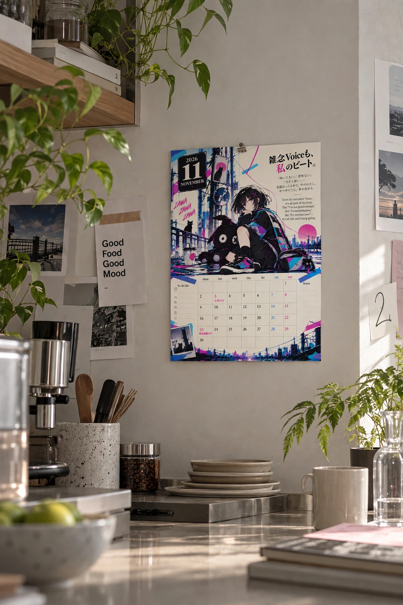

毎月ひとつのテーマを決めて、音楽、MV、カレンダー、A4マガジンを更新しています。
子どもは楽しく、大人は少しだけ前向きになれるように、今月のテーマをわかりやすく届けるシリーズです。
11月号のテーマは「雑念Voice」
11月号は、同じ曲から生まれた2つのバージョンで届けます。
こちらは「雑念Voice」。リズとノイズの世界のバージョンです。
コンクリートの部屋の、ガラスの箱の上。
ガムをふくらませながら座っているのは、やりたいことが山ほどある17歳の女の子「リズ」です。
となりには、いつもそばにいる黒猫「ノイズ」がいます。
決めたはずなのに、なぜか胸がざわつく。
そんなとき、リズの頭の中では、何が聞こえているのでしょうか。
頭の中の声は、言いかえられる
「向いてない」「意味ない」「今さら遅い」。
ふとした瞬間に、頭の中でこんな声が聞こえたことはありませんか。
この号では、その声を「ノイズ」と呼んでいます。
ノイズは、消さなくても大丈夫です。言いかえて、自分の味方にできます。
ザワザワするのは、まだあきらめてない証拠。The noise means you haven't given up.
マガジンの中身
STORY｜今月のストーリー
リズの頭の中は、
やりたいことで いっぱい。
決めたはずなのに、むねがざわつく。
「本当にそれでいいの？」
銀色のミラが、わらう。
くらべるたびに、小さくなる。
やめたい。でも、やめない。
続きは、MVで。
3 POINTS｜今月の3つのメッセージ
- ザワザワしていい｜まようのは、本気で考えているしるし。
- くらべても、点数は出ない｜正解は、だれにもわからない。
- 最初の「やりたい」を思い出そう｜だれのためでもない、むねの音を聞いてみよう。
気になった言葉を一つ選んで、今日の自分に当てはめてみてください。
ノイズの声を、言いかえよう
頭の中の声は、言いかえられる。誌面には、3つの言いかえが載っています。
- 向いてない → まだ、ためしているとちゅう
- 意味ない → たのしかったなら、それでいい
- 今さら遅い → 今日が、いちばん早い日
自分の頭の中の声も、同じように言いかえてみてください。
4 QUESTIONS｜考えてみる4つの問い
答えを急がず、一日のことを振り返るための問いです。
- さいきん、むねがザワザワしたのは、どんなとき？
- くらべるのをやめたら、何をしてみたい？
- 山ほどある、やりたいことの、最初の1つは？
- 今日の自分に、いいねを1つあげるなら、何に？
CHARACTERS｜登場キャラクター
- RIZU（リズ）｜やりたいことが山ほどある、17歳の女の子。
- NOISE（ノイズ）｜いつもリズのそばにいる黒猫。ふえると、頭の中の声になる。
- MIRA（ミラ）｜銀色にすきとおった、もうひとりのリズ。
ザワザワ・ログ｜7日間の記録
「きょうのザワザワ」と「それでもやったこと」を、1日ひとことずつ書く欄です。
その日の気持ちは、コードの形で残します。ブルブル、ゆらゆら、ふわふわの3つから選びます。
7日たったら、ふわふわがいくつあるか数えてみてください。
きょうのコードを かいてみよう
ブルブルは「ざわざわ」、ゆらゆらは「ひとやすみ」、ふわふわは「はれた！」。
今日の気持ちに近いコードを、自由に描いて、名前もつけてみましょう。
大人へのひとこと
まよいは、本気のしるし。
答えを急がず、最初の「やりたい」を、いっしょに聞いてみてください。
本編を観る
Rainau「雑念Voice」のMVは、YouTubeで公開する予定です。
リズとノイズがいる、光るコードとガラスのビー玉の部屋を、音楽と映像でも楽しんでみてください。
今日の頭の中の声を、言いかえてみる
今日、あなたの頭の中では、どんな声が聞こえましたか？
この11月号が、その声に「それでもいいよ」と返してみるきっかけになったらうれしいです。
ザワザワしたままでいい。きょうも、自分のビートで。

マガジンのダウンロードはこちら
このマガジンは、個人利用の範囲で無料でお使いいただけます。
下の配布用ファイルを保存して、ご自宅やコンビニなどで印刷し、今日のザワザワや、それでもやったことを書き留めるのに使ってみてください。
2026年11月号 カレンダー
PNGをダウンロード「雑念Voice」2026年11月号
PDFをダウンロードダウンロード・ご利用にあたって
ダウンロードの前に、以下をご確認ください。
- ご自身で読んだり書き込んだりするなど、個人で楽しむ範囲でご利用ください。
- 印刷前に用紙のサイズと向きを確認し、画像全体が用紙に収まるように調整してください。
- プリンター、用紙、画面の設定によって、色や仕上がりが異なる場合があります。
- 印刷代や通信料は、ご利用になる方の負担となります。
以下の行為はご遠慮ください。
- 素材データの再配布や、他のサイト・SNSへの再アップロード
- 素材の販売
- 加工した素材の配布や販売
- 自分で作ったものとして公開すること
- 商用利用
作品を気に入っていただけたら、素材データを配るのではなく、このnote記事やYouTubeのMVへのリンクで紹介してもらえるとうれしいです。
11月号のもうひとつのバージョン
同じ11月号に、別バージョンの「ザワザワVoice」もあります。
こちらはヌイとイトの世界です。同じ曲が、まったくちがう景色になります。ぜひ見くらべてみてください。
 ▶ 11月号 別バージョン「ザワザワVoice」ヌイとイトの世界
▶ 11月号 別バージョン「ザワザワVoice」ヌイとイトの世界前の号はこちら
▶ 10月号「桁ケタ STEP UP」（準備中）